metodo di Tartinville
Per utilizzare questo metodo e' necessario conoscere bene gli argomenti relativi alle equazioni di secondo grado ed anche le disequazioni di secondo grado, soprattutto ripassa gli schemi sui valori interni ed esterni all'intervallo delle radici
faremo uno schema con le seguenti disequazioni relative al parametro
- imponiamo,come prima cosa, che, al variare del parametro, il discriminante dell'equazione sia maggiore di zero per la realta' delle radici
- poniamo poi il primo coefficiente maggiore di zero, per sapere, al variare del parametro, se i valori positivi sono interni od esterni alle radici seguendo gli schemi delle disequazioni di secondo grado
- sostituiamo i valori limite
x1
x2
x3 alla x e calcolare per quali valori del parametro si ha
f(x1) > 0 ;
f(x2) > 0 ;
f(x3) > 0 ;
questo ci permettera' di vedere se il valore limite e' interno oppure esterno all'intervallo delle radici
di solito la discussione e' fatta rispetto a due valori assegnati x1 x2, ma nei problemi talvolta si potranno anche avere tre valori; il terzo valore x3 verra' chiamato limite aggiunto
calcoliamo infine al variare del parametro la semisomma  delle radici, per sapere da che parte sono esterni i valori limiti
x1,
x2,
x3, calcoleremo delle radici, per sapere da che parte sono esterni i valori limiti
x1,
x2,
x3, calcoleremo
- x1
- x2
- x3
riportiamo tutti i dati (caposaldi) trovati per il parametro nei primi tre punti sulla prima linea di un grafico e sulle altre linee riportiamo tutte le disequazioni precedenti; i dati sulla semisomma sono da considerare solo se utili e non vanno riportati fra i caposaldi
discutiamo il grafico in ogni intervallo ed in ogni punto trovato:
Vediamo l'applicazione del metodo su un esercizio
da notare che, purtroppo, eserizi di questo genere sono sempre piuttosto lunghi
discutere al variare del parametro k l'equazione
(k-1)x2 + 4kx + 3k = 0
con i limiti -2 < x  4 4
abbiamo
a = k-1
b = 4k
c = 3k
seguiamo lo schema
- poniamo il discriminante dell'equazione maggiore di zero per la realta' delle radici
b2 - 4ac > 0
(4k)2 - 4(k-1)(3k) > 0
nota
16k2 - 12k2 + 12k > 0
4k2 + 12k > 0
k2 + 3k > 0
l'equazione associata
k2 +3k = 0
ha soluzioni
k = 0 k = -3
quindi la disequazione e' verificata per valori esterni cioe'
k < -3 U k > 0
- poniamo il primo coefficiente maggiore di zero
k-1 > 0
se k >1
- sostituiamo i valori limite alla x e poniamo maggiore di zero l'espressione che otteniamo
- sostituisco 2
f(-2) = (k-1)(-2)2 + 4k(-2) + 3k > 0
(k-1)4 - 8k + 3k > 0
4k - 4 - 8k + 3k > 0
-k > 4
k < - 4
- sostituisco 4
f(4) = (k-1)(4)2 + 4k(4) + 3k > 0
(k-1)16 + 16k + 3k > 0
16k - 16 + 16k + 3k > 0
35k > 16
- adesso calcoliamo la semisomma delle radici
 = = |
-b
-----
2a |
-4k
= ------- =
2(k-1) |
-2k
-----
k-1 |
-
calcoliamo - (-2)
| - (-2) = |
-2k
-----
k-1 |
+ 2 > 0 |
-2k + 2k - 2
-------------
k-1 |
> 0 |
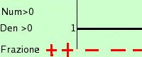
- 2
-------------
k-1 |
> 0 |
quindi
 +2 > 0 per k < 1 +2 > 0 per k < 1
-
calcoliamo - 4
| - 4 = |
-2k
-------
k-1 |
- 4 > 0 |
-2k - 4k + 4
------------------
k-1 |
> 0 |
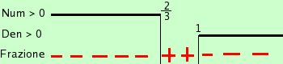
-6k + 4
-------------
k-1 |
> 0 |
Calcoli:
-6k+4 > 0
6k-4 < 0 6k < 4
k < 4/6 k <2/3
quindi
- 4 > 0 per 2/3 < k < 1
- Ora ordino i caposaldi e faccio il grafico
Fai attenzione ad ordinare esattamente i caposaldi, io sbagliavo sempre e poi non mi tornavano i conti; basta che siano ordinati, non c'e' bisogno di rispettare la lunghezza degli intervalli
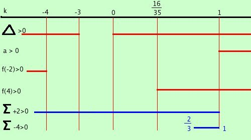
Ho indicato con una linea gli intervalli in cui le disequazioni sono verificate.
- facciamo la discussione procedendo da sinistra verso destra
Se k < -4 abbiamo
il discriminante maggiore di zero quindi abbiamo due radici reali e distinte x1 e x2
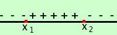
Il primo coefficiente e' negativo, pertanto i valori interni fra
x1 e x2 sono positivi
f(-2) e' positivo quindi -2 e' interno alle radici
f(4) e' negativo quindi 4 e' esterno alle radici
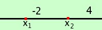
quindi abbiamo che in mezzo ai limiti c'e' una radice x2accettabile
Se k < -4 una radice accettabile
Se k = -4 abbiamo
il discriminante maggiore di zero quindi abbiamo due radici reali e distinte x1 e x2
Il primo coefficiente e' negativo, pertanto i valori interni fra
x1 e x2 sono positivi
f(-2) e' nullo quindi -2 coincide con una delle radici; essendo la semisomma positiva coincidera' con la radice minore x1
la semisomma e' sempre a meta' tra x1 ed x2, quindi se semisomma-valore e' positivo allora il valore si trova a sinistra, mentre se e' negativa allora il valore sara' a destra
f(4) e' negativo quindi 4 e' esterno alle radici
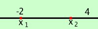
quindi abbiamo una radice coincidente col valore limite;
questa soluzione sarebbe accettabile se avessimo la condizione maggiore od uguale , mentre avendo solo maggiore la soluzione x1 non e' accettabile
La soluzione x2e' invece accettabile perche' compresa fra -2 e 4
Se k = -4 una radice accettabile
Se -4 < k < -3 abbiamo
il discriminante maggiore di zero quindi abbiamo due radici reali e distinte x1 e x2
Il primo coefficiente e' negativo, pertanto i valori interni fra
x1 e x2 sono positivi
f(-2) e' negativo quindi -2 e' esterno alle radici ed essendo la semisomma positiva sara' esterno a sinistra
f(4) e' negativo quindi 4 e' esterno alle radici ed essendo la semisomma negativa sara' esterno a destra
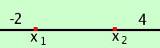
quindi abbiamo che in mezzo ai limiti ci sono entrabe le radici e sono accettabili
Se -4 < k < -3 due radici accettabili
Se k = -3 abbiamo
il discriminante e' uguale a zero quindi abbiamo due radici reali e coincidenti x1 = x2
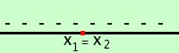
Il primo coefficiente e' negativo, pertanto i valori esterni alle radici sono negativi
f(-2) e' negativo quindi -2 e' esterno alle radici e, essendo la semisomma meno il limite positiva, sara' esterno a sinistra
f(4) e' negativo quindi 4 e' esterno alle radici ed, essendo la semisomma meno il limite negativa, sara' esterno a destra
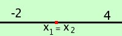
quindi abbiamo che in mezzo ai limiti ci sono entrambe le radici che sono coincidenti ed accettabili
Se k = -3 due radici coincidenti accettabili
Se -3 < k < 0 abbiamo
il discriminante minore di zero quindi nessuna soluzione reale
Se -3 < k < 0 nessuna soluzione
Se k = 0 abbiamo
il discriminante e' uguale a zeroquindi abbiamo due radici reali e coincidenti x1 = x2
Il primo coefficiente e' negativo, pertanto i valori esterni alle radici sono negativi
f(-2) e' negativo quindi -2 e' esterno alle radici e, essendo la semisomma meno il limite positiva, sara' esterno a sinistra
f(4) e' negativo quindi 4 e' esterno alle radici ed essendo la semisomma negativa sara' esterno a destra
quindi abbiamo che in mezzo ai limiti ci sono entrambe le radici che sono coincidenti ed accettabili
Se k = 0 due radici coincidenti accettabili
Se 0 < k < 16/35 abbiamo
il discriminante maggiore di zero quindi abbiamo due radici reali e distinte x1 e x2
Il primo coefficiente e' negativo, pertanto i valori interni fra
x1 e x2 sono positivi
f(-2) e' negativo quindi -2 e' esterno alle radici ed essendo la semisomma meno il limite positiva sara' esterno a sinistra
f(4) e' negativo quindi 4 e' esterno alle radici ed essendo la semisomma meno il limite negativa sara' esterno a destra
quindi abbiamo che in mezzo ai limiti ci sono entrambe le radici e sono accettabili
Se 0 < k < 16/35 due radici accettabili
Se k = 16/35 abbiamo
il discriminante maggiore di zero quindi abbiamo due radici reali e distinte x1 e x2
Il primo coefficiente e' negativo, pertanto i valori interni fra
x1 e x2 sono positivi
f(-2) e' negativo quindi -2 e' esterno all'intervallo delle radici
f(4) e' nullo quindi 4 coincide con una delle radici; essendo la semisomma negativa coincidera' con la radice maggiore x2
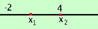
quindi abbiamo una radice coincidente col valore limite;
questa soluzione e' accettabile perche' abbaimo la condizione minore od uguale a 4
La soluzione x1e' anch'essa accettabile perche' compresa fra -2 e 4
Se k = 16/35 due soluzioni accettabili di cui una limite
Se 16/35 < k < 1 abbiamo
il discriminante maggiore di zero quindi abbiamo due radici reali e distinte x1 e x2
Il primo coefficiente e' negativo, pertanto i valori interni fra
x1 e x2 sono positivi
f(-2) e' negativo quindi -2 e' esterno alle radici
f(4) e' positivo quindi 4 e' interno alle radici
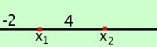
quindi abbiamo che in mezzo ai limiti c'e' solamente la radice x1
Se 16/35 < k < 1 una radice accettabile
Se k = 1 abbiamo
l'equazione, annullandosi il primo coefficiente diventa di primo grado
in tal caso andiamo a calcolare direttamente: sostituiamo a k il valore 1 nell'equazione di partenza ed otteniamo
(k-1)x2 + 4kx + 3k = 0
(1-1)2 + 4(1)x +3(1) = 0
4x + 3 = 0
x = -3/4
essendo il valore -3/4 compreso fra -2 e 4 la soluzione e' acettabile
Se k = 1 esiste una sola radice ed e'accettabile
Se k > 1 abbiamo
il discriminante maggiore di zero quindi abbiamo due radici reali e distinte x1 e x2
Il primo coefficiente e' positivo, pertanto i valori interni fra
x1 e x2 sono negativi
f(-2) e' negativo quindi -2 e' interno alle radici
f(4) e' positivo quindi 4 e' esterno alle radici
quindi abbiamo che in mezzo ai limiti c'e' solamente la radice x2
Se k > 1 una radice accettabile
Non e' finita: adesso devo raccogliere i risultati
Due soluzioni per - 4 < k -3 U 0 k 16/35
Una soluzione per k - 4 U k > 16/35
U sta per unione, cioe' e' valido sia il primo intervallo che il secondo
|